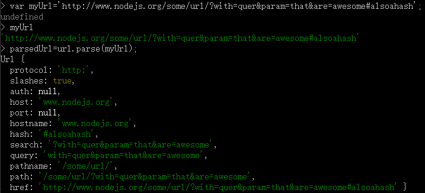
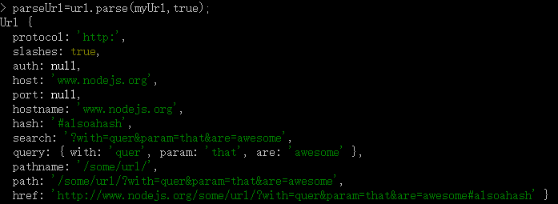

URL 模块提供了解析和处理 URL 字符串的便利工具，该模块提供了 3 个方法：parse、format 和 resolve。
var url=require('url');
url.parse()方法用于解析URL对象，解析后返回一个JSON对象。
在Node命令行里演示一下parse的功能。
先包含 URL 模块,注意所有的模块名称都是小写的。我们创建 的 url 字符串包含了需要被解析的所有部分。解析只要对该字符串调 用 URL 模块的 parse 方法,它返回的数据结构代表了解析出来的 URL 的各个部分.
href 是 原 始 输 入 用 来 解 析 的 完 整 URL。protocol 是 用 在 URL 里 的 协 议（ 如 http://、https://、ftp:// 等 ）。host 是 URL 里 完 整 的 hostname。 这 可 以 是本地服务器的 hostname，比如打印机服务器，也可以是如 www.google.com 一 样完整的域名。它还可能包含了端口（如 8080），或用户名和密码（如 un:pw@ ftpserver.com）。hostname 的不同部分会进一步细分到：auth（包含用户证书）、 port（单纯是端口）、hostname（包含 URL 的主机名）。重点是，hostname 依 然是完整的主机名，包含了顶级域名（如 .com 和 .net 等）和特定的服务器。如 果 URL 是 http://sport.yahoo.com/nhl，hostname 不会单独给你顶级域名（yahoo. com）或只给你主机（sport），而是会给你完整的主机名（sport.yahoo.com）。 URL 模块并没有能力把 hostname 细分成单独的部分，如域名或顶级域名。
URL 的下一组成员是关于 host 部分后面的所有东西。pathname 是跟在 host 之后 的整个文件路径，例如 http://sports.yahoo.com/nhl 的 pathname 就是 /nhl。下一个 是 search 部分，保存了 URL 中 HTTP GET 的参数。比如 URL 是 http://mydomain. com/?foo=bar&baz=qux，search 部分对应的是 ?foo=bar&baz=qux。注意它包含 了 ?。query 参数和 search 部分类似，它包含二者中的一项，具体要看 parse 被 调用的方法。
URL 的最后一个部分是片段部分（称为 hash）。这是 URL 中在 # 之后的部分。 通 常， 这 是 用 来 指 向 HTML 页 面 内 的 命 名 锚 记（anchor）。 比 如 http://abook.com/#chapter2 可能是指向包含整书内容的网页的第 2 章。在这个例子中，hash 部 分就包含了 #chapter2。同样，该字符串包含了“#”。有些网站，如 http://tiwtter. com，使用更复杂的片段来做 AJAX 应用，但基本原则是一样的。所以假如用户 mentions 的 Twitter 账号 URL 是 http://twitter.com/#!/mentions，那么它的 pathname 是 /，但 hash 是 #!/mentions。
parse 可以有两个参数：url 字符串，及一个可选的布尔值，用来确定 queryString 是否该用 querystring 模块来解析。如果第二个参数是 false，query 将包含一个与 search 类似的字符串，但去掉了开头的 ?。默认为 false。
url.format()用于格式化URL对象。输入一个URL对象，返回格式化后的URL字符串。
传入的URL对象会做一些处理。
*href 属性会被忽略 *protocol无论是否有末尾的 : (冒号)，会同样的处理 *这些协议包括 http, https, ftp, gopher, file 后缀是 :// (冒号-斜杠-斜杠). *所有其他的协议如 mailto, xmpp, aim, sftp, foo, 等 会加上后缀 : (冒号) *auth 如果有将会出现. *hostname 如果 host 属性没被定义，则会使用此属性. *port 如果 host 属性没被定义，则会使用此属性. *host 优先使用，将会替代 hostname 和port *pathname 将会同样处理无论结尾是否有/ (斜杠) *search 将会替代 query属性 *query (object类型; 详细请看 querystring) 如果没有 search,将会使用此属性. *search 无论前面是否有 ? (问号)，都会同样的处理 *hash无论前面是否有# (井号, 锚点)，都会同样处理
原文链接：http://www.jianshu.com/p/aed6a885db61
url.resolve(from,to)方法用于处理URL路径，也可以处理锚点，为其替换原有的标签，from为源地址，to为需要添加或替换的标签。
//resolve实现源码
Url.prototype.resolve=function(relative){
return this.resolveObject(urlParse(relative,false,true)).format();
};